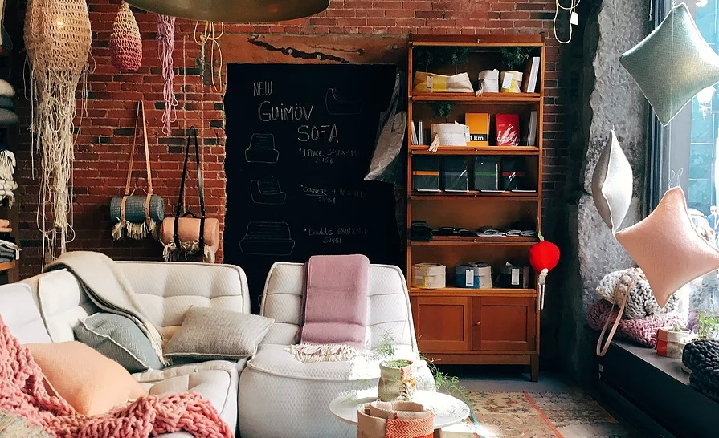

НАШІ ПРОЕКТИ

Багато людей дуже люблять подорожувати, і саме для них цей проект. Кожен бажаючий зможе приїхати сюди, зупинитися, пожити деякий час, дослідити місто. А також знайти друзів серед таких сами мандрівників та обмінятися інформацією на будь-які теми:)
У кожному місті України існують репетиційні бази, але всі вони направлені тільки на розвиток бізнесу та отримання прибутку. Ми пропонуємо нову ідею — музична студія, як соціальне підприємсво. Прибутки від діяльності студії йтимуть на розвиток благочинного проекту «Free Host Point»